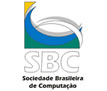

Esta é a 6ª edição da ERRC, evento regional e de periodicidade anual, que tem como principal objetivo propiciar a professores, profissionais e alunos de graduação e pós-graduação, um fórum para discussão e divulgação das atividades e pesquisas relacionadas à área de Redes de Computadores no Rio Grande do Sul. Este evento é composto por minicursos, palestras, oficinas e apresentações de trabalhos técnicas. A ERRC é um evento promovido pela SBC – Sociedade Brasileira de Computação.
A 6ª. edição será realizadas nas dependências do Centro Universitário Ritter dos Reis – UniRitter, no campus de Porto Alegre, sendo organizada pela Faculdade de Informática. Os minicursos são coordenados pelo Prof. Me. Gaspare Bruno (UNILASSALE).
O Coordenador Geral da 6ª. ERRC é o Prof. Me. Átila Bohlke Vasconcelos. O Comitê de Programa é coordenado pelo Prof. Dr. Vinicius Gadis Ribeiro.
Sua primeira edição, em 2003, aconteceu em Porto Alegre, fruto de uma iniciativa da Universidade Federal do Rio Grande do Sul (UFRGS), da Pontifícia Universidade Católica do Rio Grande do Sul (PUC-RS) e da Universidade do Vale do Rio dos Sinos (UNISINOS), nas dependências da PUC-RS. A segunda edição, em 2004, foi organizada conjuntamente por professores da UFRGS e do UNILASALLE, ocorrendo nas dependências do UNILASALLE. Em 2005, a ERRC foi sediada na Universidade de Santa Cruz do Sul (UNISC), sendo organizada por seus professores. A edição de 2006 foi organizada e realizada na Universidade de Passo Fundo – UPF.
Realização: |
Promoção: |
 |